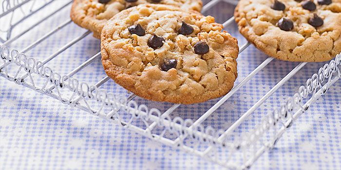

|  | You use it to cool cookies and chill chocolate-dipped confections, but if you're not using your cooling rack to cook, you're not letting it live up to its full potential. When you cook meat or vegetables on a cooling rack, it effectively functions as an oversized roasting rack, allowing the hot air to circulate evenly around the food. (To do this, of course, your cooling rack must be oven-safe. More on that below.) |